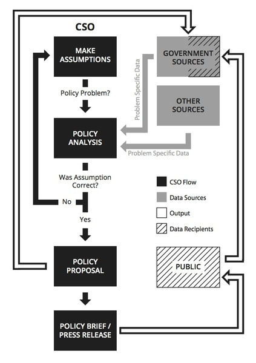

We are now in a phase where many governments around the world are proactively publishing documents about what they plan to spend (budgets) and actually spend (spending data). Increasingly, this material is available on the internet, so that anybody can access it at any time. Still, too much of the information is released in the form of 'documents' rather than 'data'. Ideally we need both so that inforamtion can be analyzed, re-used and understood. This chapter is a quick overview of some of the raw inputs required for data-driven advocacy and how it works in practice.
When we speak about data, what we usually refer to is the notion of machine-readable (http://en.wikipedia.org/wiki/Machine-readable_data) data. Many of the formats most commonly used for policy papers and long-form reports published by most policy-making institutions are PDF files, Word documents, web pages or closed interactive infographics - do not structure information in a way that lends itself to automated analysis and extraction.
Such documents are formatted for humans (or printers) to interpret, and it can be hard (and in many cases nearly impossible) for a machine to re-construct the elements in the presentation.
Other formats, such as Excel and CSV files contain a higher level of structured information. For example, in an Excel file you can mark a number of cells and easily calculate their sum. Even more exotic and useful file formats, such as XML documents, JSON APIs or Shapefiles may not have easy-to-use viewer applications. You can think of them as the glue that connects different systems on the web, so that different databases can work together in a seamless fashion.
What asking for machine-readable bulk data means for CSOs is simple: you won't have to spend a lot of time manually extracting data from reports into spreadsheets to be able to filter, sort and analyse it - a process which is both time-consuming and can introduce errors.
In the next section 'Getting Data' - we will deal with asking governments for data (or getting it via other means). To set the scene for this and to work out whether your government actually publishes usable data already, have a quick look at the following questions:
Is going out and provoking a riot the best way to get a Government to take onboard your message? There are alternatives: hit them with the data hammer instead!
Making evidence-based policy proposals consists from three major phases: formulating your assumption, analysis (which often leads to re-formulating your assumption, and presenting your data in an engaging way in a policy proposal.
Asking the right question is key to getting the most out of your data. We all make assumptions, and our organisation may have a particular standpoint on a given issue. Our first task is always to formulate our assumptions and then interrogate them ferociously. Although we try to be rational in this process, our judgement is often influenced by our subjective goals, values, and beliefs. Sometimes, you'll need to revisit your assumptions several times over to ensure they are valid and you can back them up with data. Once you know your policy problem is definitely a problem, you can work to package it in a way that's appropriate for your target audience.
Often our job is to act in the public interest by analysing conflicting assumptions and working out which one is more valid. For example, in Greece, Spain, and many other European countries people protest almost everyday as the Government cuts spending to bring down its budget deficit. If the Goverment wanted to keep its current level of spending, but increased taxes to increase its revenue, different citizens groups would still protest depending on which taxes are to be increased. In any case, there will always be more than one interpretation of any Government policy, and interested side to support it, or not.
Once we have a well defined policy problem, specific goals, or results different stakeholders are trying to achieve, and corresponding instruments they are using in this process, we may systematically search for the specific data needed to create our own policy proposals. This data can be obtained either from the Government, some other sources e.g. academic journals, private companies, or generated by ourselves. When data is gathered we will use a specific methodology to analyze it, and based on this analysis we will approve or reject our assumptions. If the assumption is rejected, based on our findings we will have to make the new assumption, and start the process from the beginning. If our assumption is approved, we will use our results to make a policy proposal to the Government.
For CSOs it is important to recognize who is a decision maker, hence, who you should be targeting with your policy proposal. Policy proposals should be methodologically well structured, evidence-based, open for debate, and scientificaly evaluated. Governments will seldom take our policy proposals as their own policymaking, but may actually change its course of action, get new insights, views, and understanding of the subject. We may also use policy briefs to approach Government officials, or press releases to get the attention of the public.

Fish subsidies
The influence CSOs have on government policy comes from a wide and varied set of activities. These can range from producing a widely shared dataset or infographic which subtly influences the mood of policy makers, to more targeted CSO advocacy and lobbying on issues they are experts.
The Fish Subsidies group (http://fishsubsidy.org) are a nice example of a CSO engaged in targeted activites. Having collected a comprehensive set of data on Fishing subsidies paid under the European Union’s common fisheries policy and they break this down into payments for every EU member state, and then complemented this with activites of fishing. They have produced a report (http://is.gd/XYPgq5) assessing the environmental and social impacts of the Financial Instrument for Fisheries Guidance between 2000 and 2006. This extensive document fed directly into the EU political decision making process.